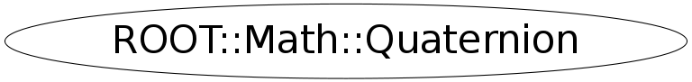

class ROOT::Math::Quaternion
Rotation class with the (3D) rotation represented by
a unit quaternion (u, i, j, k).
This is the optimal representation for multiplication of multiple
rotations, and for computation of group-manifold-invariant distance
between two rotations.
See also ROOT::Math::AxisAngle, ROOT::Math::EulerAngles, and ROOT::Math::Rotation3D.
@ingroup GenVector
Function Members (Methods)
public:
Data Members
private:
| ROOT::Math::Quaternion::Scalar | fI | |
| ROOT::Math::Quaternion::Scalar | fJ | |
| ROOT::Math::Quaternion::Scalar | fK | |
| ROOT::Math::Quaternion::Scalar | fU |
Class Charts
{kind=link}
{kind=link}
{kind=link}
{kind=link}

Function documentation
Quaternion()
========== Constructors and Assignment =====================
Default constructor (identity rotation)
{ } Quaternion(IT begin, IT end)
Construct given a pair of pointers or iterators defining the
beginning and end of an array of four Scalars
{ SetComponents(begin,end); }explicit Quaternion(const ROOT::Math::Quaternion& )
======== Construction From other Rotation Forms ==================
Construct from another supported rotation type (see gv_detail::convert )
{gv_detail::convert(r,*this);}void Rectify()
The compiler-generated copy ctor, copy assignment, and dtor are OK.
Re-adjust components to eliminate small deviations from |Q| = 1
orthonormality.
Quaternion & operator=( OtherRotation const & r )
Assign from another supported rotation type (see gv_detail::convert )
void SetComponents(double* begin, double* end)
======== Components ==============
Set the four components given an iterator to the start of
the desired data, and another to the end (4 past start).
void GetComponents(IT begin, IT end)
Get the components into data specified by an iterator begin
and another to the end of the desired data (4 past start).
void SetComponents(ROOT::Math::Quaternion::Scalar u, ROOT::Math::Quaternion::Scalar i, ROOT::Math::Quaternion::Scalar j, ROOT::Math::Quaternion::Scalar k)
Set the components based on four Scalars. The sum of the squares of
these Scalars should be 1; no checking is done.
Scalar U() const
Access to the four quaternion components:
U() is the coefficient of the identity Pauli matrix,
I(), J() and K() are the coefficients of sigma_x, sigma_y, sigma_z
{ return fU; }XYZVector operator()(const ROOT::Math::Quaternion::XYZVector& v) const
Scalar Distance(const ROOT::Math::Quaternion& q) const
Distance between two rotations in Quaternion form
Note: The rotation group is isomorphic to a 3-sphere
with diametrically opposite points identified.
The (rotation group-invariant) is the smaller
of the two possible angles between the images of
the two totations on that sphere. Thus the distance
is never greater than pi/2.
return ! operator==(rhs)
Quaternion operator*(RotationX const & r1, Quaternion const & r2)
Multiplication of an axial rotation by an AxisAngle
Quaternion operator*(RotationY const & r1, Quaternion const & r2)
Quaternion operator*(RotationZ const & r1, Quaternion const & r2)